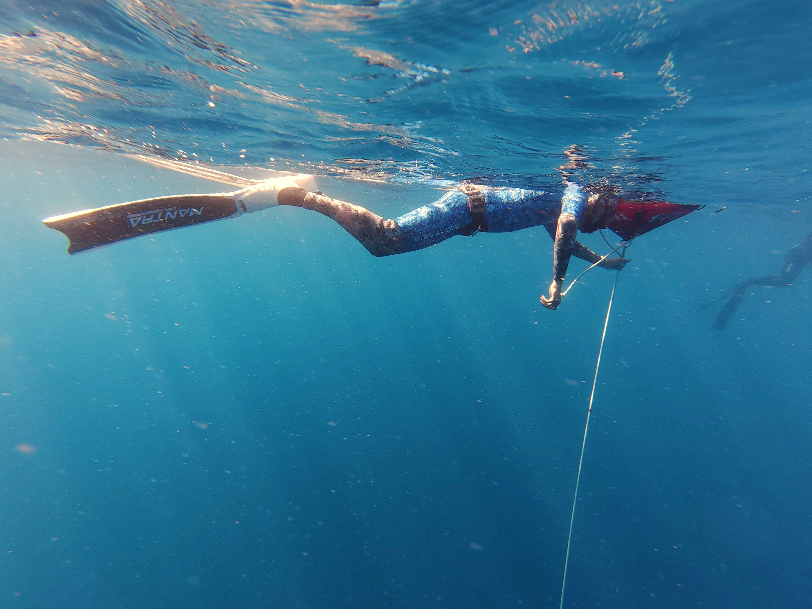
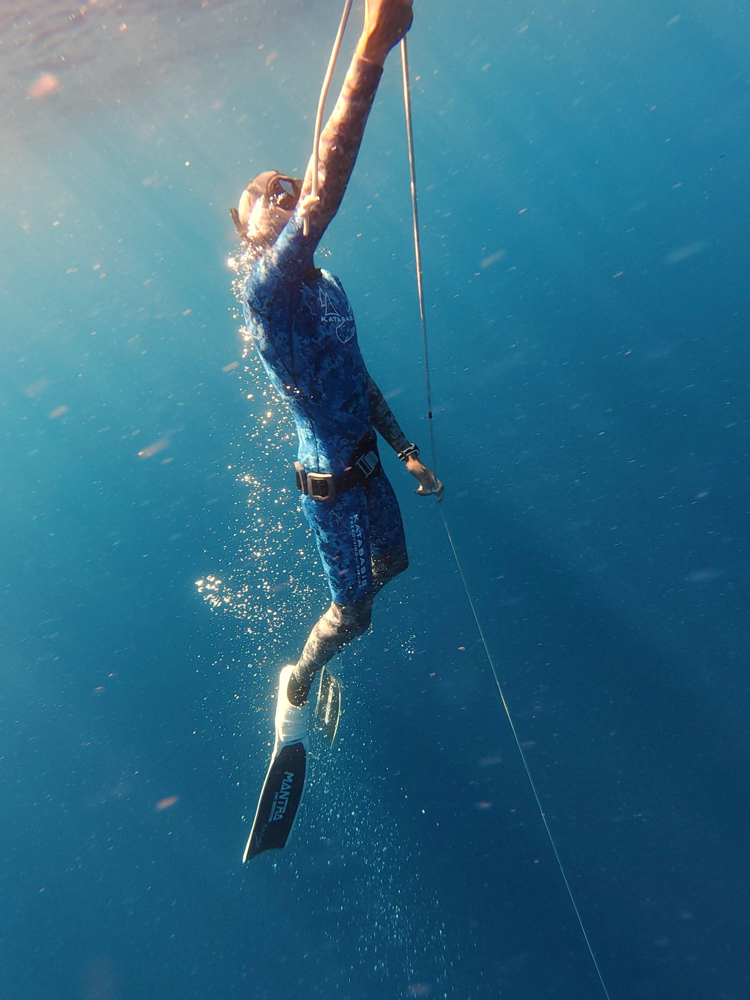
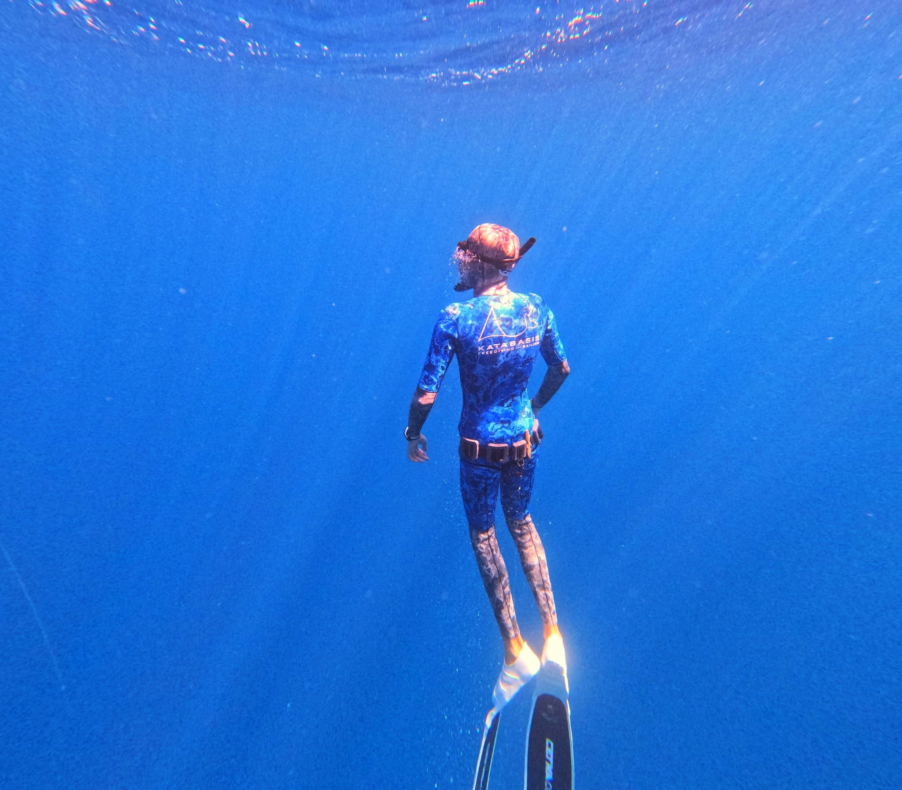
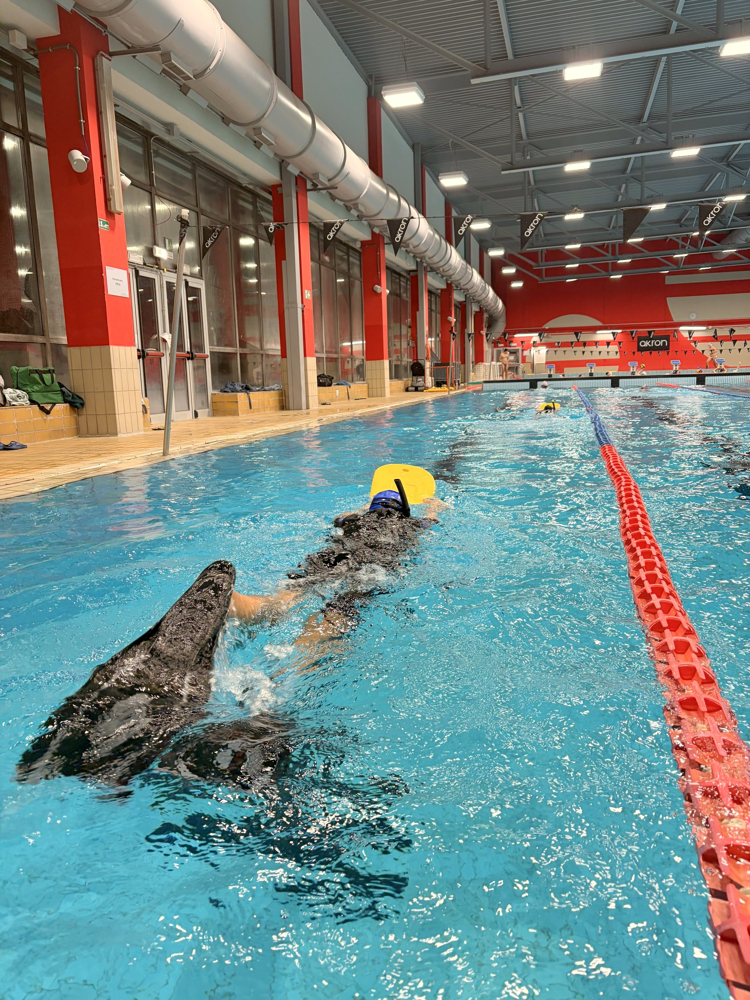
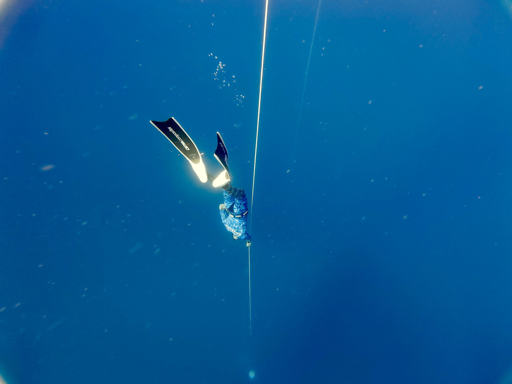
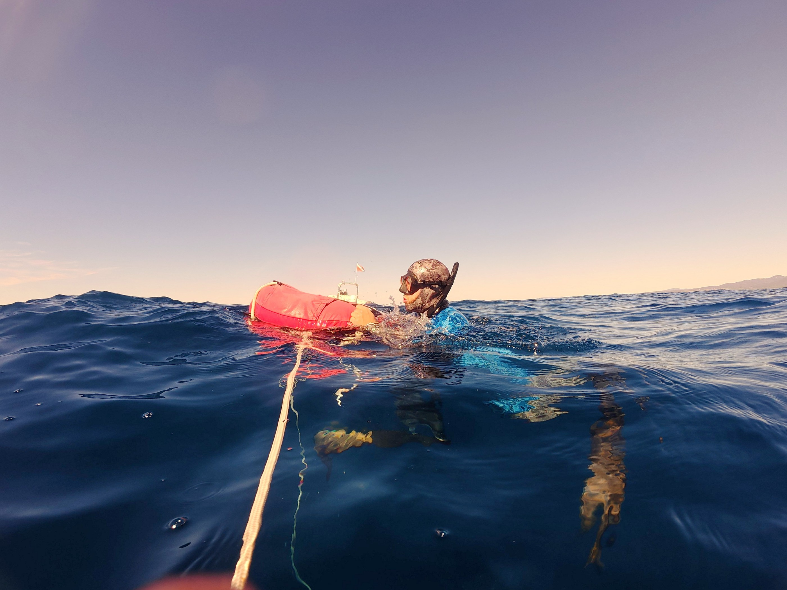
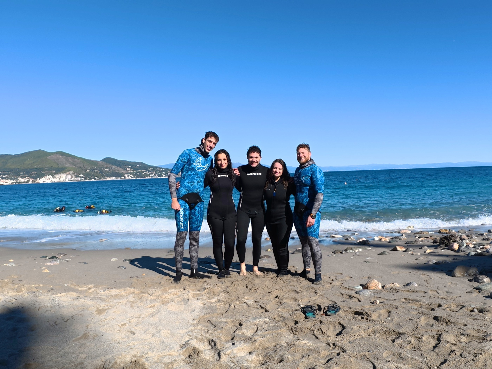
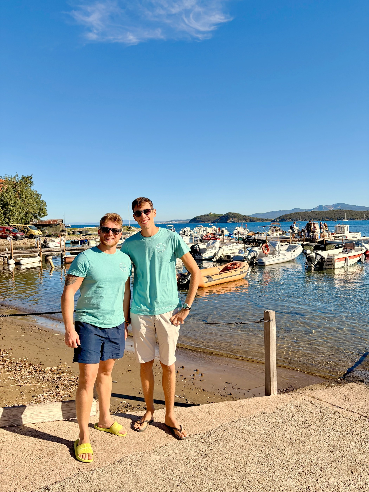

Imparare ad ascoltarsi.
Immergersi con consapevolezza.
Vivere il mare.
Percorsi di apnea per adulti e ragazzi a Torino, sessioni tecniche a 10 metri nella piscina di Venaria Reale ed esperienze in mare in collaborazione con Katabasis e Sport&Natura.
profondità personale
apnea statica personale
Istruttore SSI Freediving · dal 2025
certificazioni e brevetti personali
Didattica & collaborazioni
Meno sforzo e più controllo.
L’apnea non è solo trattenere il respiro.
Spesso si immagina l’apnea come una sfida estrema o uno sforzo di resistenza. Il mio approccio, ispirato alla scuola Katabasis, è l’esatto opposto: ricerco la calma mentale, l’economia del movimento e il benessere in acqua, rispettando sempre i ritmi naturali del corpo.
Respiro e rilassamento
L’apnea inizia in superficie, prima di immergersi. Il rilassamento diaframmatico abbassa il battito cardiaco e dissolve la tensione muscolare: sott’acqua si scoprono una pace e una presenza mentale uniche.
Sicurezza condivisa
In apnea la prima regola è chiara: mai soli in acqua. Grazie agli standard SSI l’assistenza reciproca diventa un gesto naturale, fatto di attenzione, lucidità e rispetto: quando la sicurezza è condivisa, la mente è più libera.
Tecnica ed efficienza
Ogni tensione inutile consuma energia preziosa. Attraverso una pinneggiata precisa, un assetto curato e una compensazione dolce, il movimento si fa economico e fluido, trasformando la discesa in un gesto naturale.
I percorsi formativi
Dagli allenamenti continuativi invernali a Torino fino alle sessioni profonde e alle uscite in mare in Liguria e Toscana.
Scuola e Corsi di Apnea · Torino
Piscina G. Usmiani (Sisport Torino) · Martedì 20:00 – 21:30 e turni ragazzi
Un percorso strutturato per sviluppare acquaticità, controllo e sicurezza. Il lavoro in vasca unisce apnea dinamica con e senza pinne, tecniche di respirazione e assistenza di coppia, in un ambiente accogliente ed esente da stress agonistico.
- Didattica certificata SSI (Pool Freediver, Junior e 1° Livello)
- Formula solo corso oppure stagione completa di allenamenti
- Possibilità di concordare una lezione di prova in piscina
Sessioni Tecniche a 10 Metri
Sport Club Venaria · Venaria Reale (TO)
Per chi desidera impostare o affinare la compensazione e la discesa verticale sul cavo. Grazie alla fossa subacquea profonda 10 metri a Venaria Reale, puoi allenare capovolta, assetto costante e rilassamento in acqua limpida e termicamente confortevole.
- Discesa sul cavo in fossa dedicata fino a 10 metri
- Focus su compensazione Frenzel, capovolta e idrodinamicità
- Ponte ideale tra la piscina tradizionale e il mare aperto
Uscite ed Esperienze in Mare
Liguria e Toscana · Noli, Bergeggi, Portofino e Baratti
Giornate e fine settimana dedicati alla discesa sul cavo e al piacere di vivere il mare in gruppo. Dalle sessioni tecniche sulle boe alle immersioni esplorative lungo la costa ligure e toscana, per portare nel blu tutto il lavoro svolto durante l’anno.
- Sessioni al cavo in acque libere in piccoli gruppi seguiti
- Immersioni ricreative (Bergeggi, Cristo degli Abissi a San Fruttuoso, Baratti)
- Uscite valide per il completamento dei brevetti SSI Freediver
Lezioni Private & Coaching 1-to-1
Risoluzione Blocchi, Tecnica & Preparazione
Sessioni individuali o in minime coppie costruite sulle tue necessità specifiche: sblocco della compensazione, revisione della tecnica di pinneggiata e postura, o preparazione mirata agli standard dei brevetti SSI.
- Video-analisi subacquea della pinneggiata e dell’assetto
- Esercizi mirati a secco e in acqua per la compensazione
- Orari flessibili concordati in base alle tue disponibilità
Dalla corsia in piscina ai 30 metri nel blu
Scorci reali dai nostri allenamenti alla Sisport di Torino, dalle discese sul cavo e dalle giornate in mare. Clicca su qualsiasi foto per ingrandirla ad alta risoluzione.
Tuffo in assetto costante e assistenza sul cavo

Rilassamento e ventilazione sul cavo

Acquaticità e risalita fluida lungo il cavo

Sospensione e quiete mentale nel blu

Lavoro tecnico sulla pinneggiata in corsia

Discesa sul cavo verso il piattello

Assistenza e preparazione all’atollo

Condivisione e gruppo nelle uscite a mare

Team istruttori al porticciolo di Baratti

Certificazione Internazionale
Freediving Instructor · 1° Livello
Da allievo nei campi estivi a formatore di una nuova generazione di apneisti.
Il mio viaggio nell’apnea è iniziato esattamente dove oggi porto i miei allievi: da ragazzino, partecipando ai campi estivi a Genova Nervi proposti da Sport&Natura e Katabasis. Lì ho scoperto che scendere sott’acqua non significava “sfidare” il mare, ma entrare in una sintonia profonda con esso e con il proprio corpo.
Quella passione è cresciuta negli anni fino a trasformarsi in una scelta professionale: nel 2025 sono diventato Istruttore certificato SSI Freediving, collaborando a stretto contatto con l’ASD Sport&Natura e portando a Torino la filosofia e la didattica di Katabasis.
Oggi il mio obiettivo principale è insegnare l’apnea come strumento di crescita personale. Con i ragazzi metto al centro la fiducia in se stessi, l’acquaticità e la gestione delle emozioni; con gli adulti ricerco la precisione tecnica e il distacco mentale dai ritmi quotidiani.
Domande Frequenti
Tutto ciò che serve sapere prima di iniziare, per genitori e nuovi allievi.
L’apnea è sicura per i ragazzi? Quanti allievi seguite in acqua?
Posso fare una lezione di prova prima di iscrivermi?
Serve saper nuotare come atleti agonisti per partecipare?
Quale attrezzatura è necessaria all’inizio?
Che certificato medico è richiesto?
Facciamo il primo respiro insieme.
Che tu desideri provare l’apnea per la prima volta o sia già un appassionato che vuole perfezionarsi, scrivimi senza impegno per qualsiasi informazione.
Torino · Piscina G. Usmiani (Sisport) & Venaria Reale · Didattica SSI Freediving